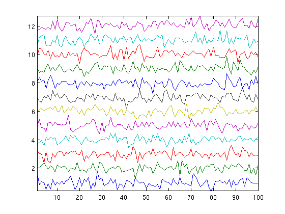
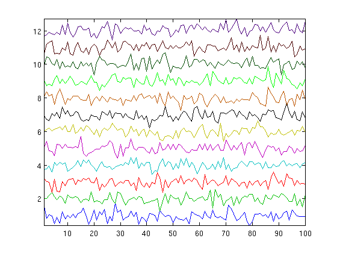

fn_colorset
Contents
Syntax
[colors ncol] = fn_colorset color = fn_colorset(k)
Description
fn_colorset defines a set of colors that is larger than the Matlab default 'ColorOrder' property of axes.
If k is specified, it returns the kth color, otherwise it returns the set of colors and the length of this set.
Example
Matlab automatically colors time plots with 7 different colors (in the following example, colors of lines 8 to 12 are the same as for lines 1 to 5).
hl = fn_eegplot(1+randn(100,12)/4,1);
fn_colorset offers 5 additional colors, and of course you can edit it to define even more!
for k=1:12, set(hl(k),'color',fn_colorset(k)), end
Source
Thomas Deneux
Copyright 2008-2012